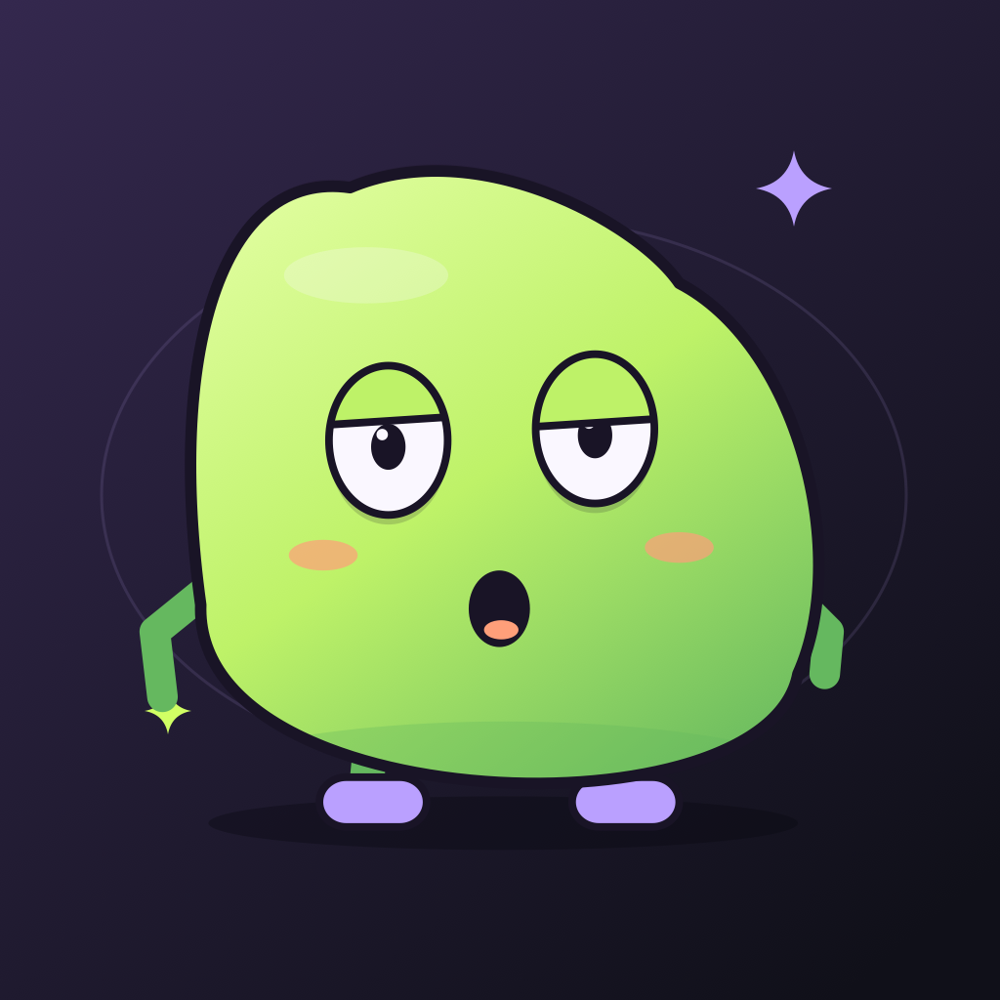
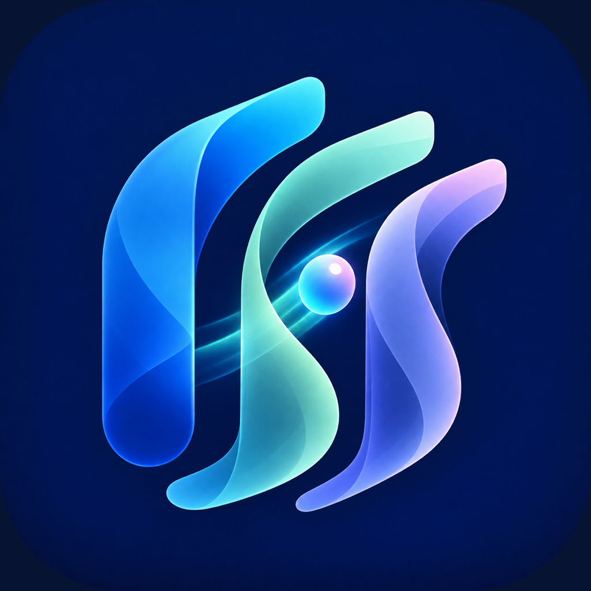
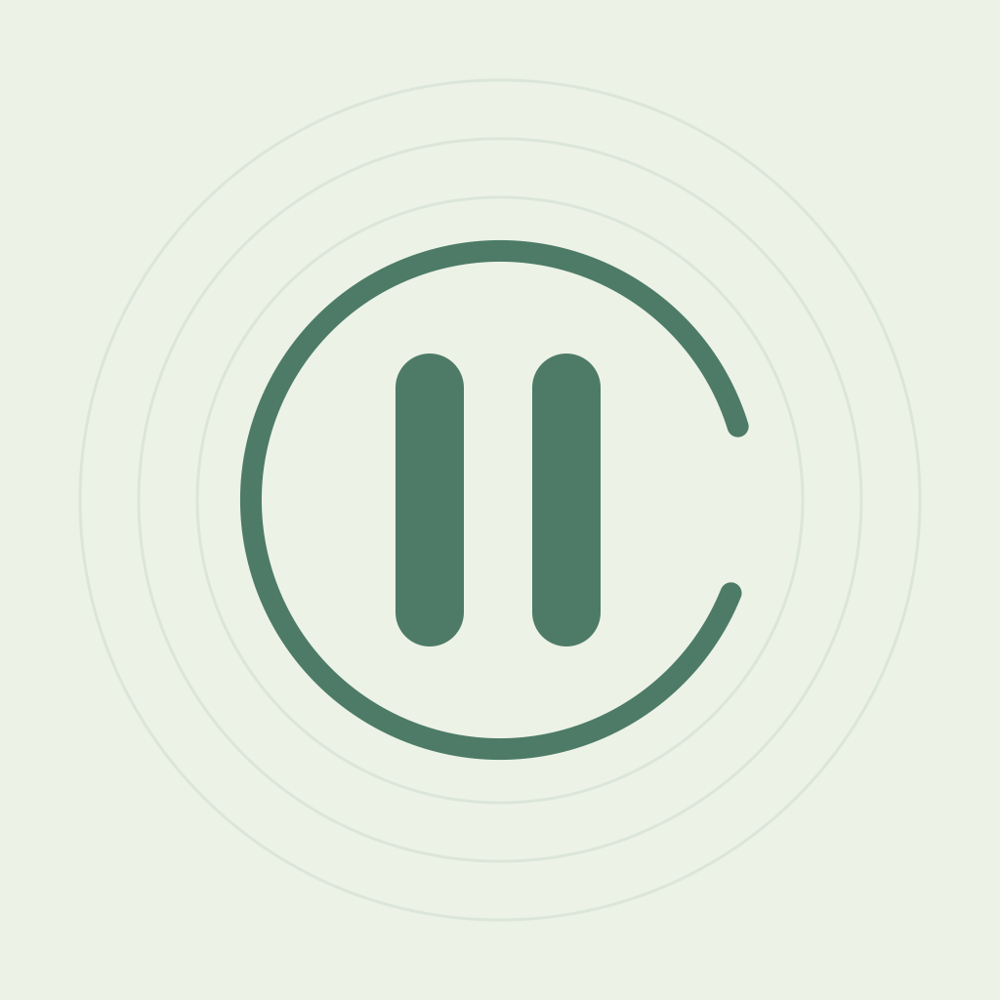
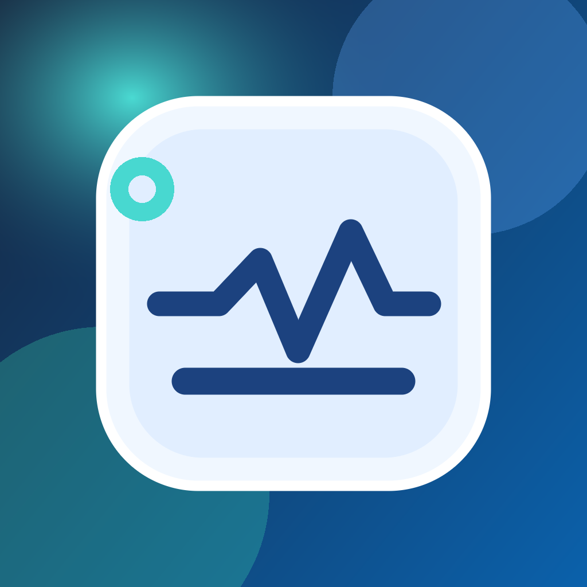

Kernora
Kayıtlar, süreçler, belgeler ve ekip görevleri. Danışmanlık ve operasyon için ortak CRM çalışma alanı.
Proje sayfasını aç↗
ÖNE ÇIKAN / BAĞIMSIZ ENDÜSTRİYEL DEMO
Üç sentetik makine. Tek bir veri hattı. Bağlantıyı kes, verinin edge buffer’da birikmesini izle; yeniden bağlanınca KPI ekranının nasıl toparlandığını gör.
Üretici → sınırlı FIFO buffer → ACK ile broker kabulü → tekilleştirilmiş API görünümü → KPI. Bağlantı kesintisi edge–broker hattına uygulanır. Yeniden bağlanınca kuyruklar sırayla boşalır.
Bütün bileşenler tarayıcı belleğinde çalışır. Gerçek MQTT/Kafka sunucusu, HTTP API veya kalıcı disk buffer’ı yoktur. Sayfa yenilenince durum sıfırlanır. 180 olaylık edge kapasitesi dolarsa yeni olaylar düşürülür ve sayaçta gösterilir.
KPI’lar yalnızca API’ye ulaşan olaylardan hesaplanır. Kalite = sağlam / tamamlanan parça. Ortalama çevrim = tamamlanan çevrim sürelerinin ortalaması. Üretim verimliliği (OEE) iddiası içermez.
JavaScript etkin olduğunda hesaplanan veri burada görünür.
Sıfırdan hazırlanmış bağımsız bir portföy örneği. İşveren kodu, şirket içi mimari veya gerçek üretim verisi kullanılmaz. Üretilen demo verisi cihazından dışarı gönderilmez.
Mühendislik deneyimim ↗SENIOR / LEAD SOFTWARE ENGINEER
Endüstriyel yazılım, bulut ve veri platformları ile telekom alanlarında 15+ yıllık deneyim. Go ve Python geliştirmeyi mimari sahiplik, gereksinim analizi ve uçtan uca teslimatla birleştiriyorum.




BİR FİKİR. BİR DENEYİM. BİR ÜRÜN.01 / PROJELER
Bu bölümdeki uygulamalar ve web projeleri, kendi tasarlayıp geliştirdiğim bağımsız, kişisel çalışmalarımdır. Günlük ihtiyaçlara ve iş süreçlerine yönelik kendi ürünlerimi burada bir araya getiriyorum.
Profesyonel projeler ve iş sonuçlarıUygulamalar ve web projeleri
Kayıtlar, süreçler, belgeler ve ekip görevleri. Danışmanlık ve operasyon için ortak CRM çalışma alanı.
Sesini çizgi film karakterine dönüştür. Kendi sahneni yarat, hareketlendir ve paylaş.
Odak seansları, esnek molalar ve sakin bir çalışma ritmi.
İstek anında kendine kısa bir mola ver. Küçük adımlarla, kendi hızında.
Abonelikler, garantiler ve iade tarihleri. Önemli günler tek bir yerde.
Gördüğün kelimeleri keşfet. Çeviri ve kişisel kelime kartlarıyla öğren.
Matematiğe küçük bir mola. Uygulama bilgileri, destek ve gizlilik.
Doğal ürünler için tasarlanmış modern katalog ve alışveriş deneyimi projesi.
Aramana uygun proje bulunamadı.
8 / 8 projeProjelerin tanıtım, destek ve gizlilik bilgilerine kendi sayfalarından ulaşabilirsin.
02 / UZMANLIK
Yalnızca kodu değil; bileşenleri, veri akışını ve teslimata giden yolu birlikte ele alıyorum.
Endüstri 4.0 mikroservisleri, REST API’ler ve veri yoğun sistemler. Mimari ve teknoloji seçiminden Go/Python geliştirmeye, entegrasyondan canlıya geçişe kadar uygulamalı mühendislik.
Bosch genelinde kullanım için tasarlanan üretim veri platformları: veri toplama, yedekleme ve işleme. Databricks ve Azure Functions ile yapay zekâ girişimlerine kullanılabilir veri hazırlama.
Beş kişilik yazılım ekibine teknik liderlik. Kod incelemeleri, mentorluk, iş paketlerine ayırma ve önceliklendirme; ekipler arası koordinasyon ve canlıya geçişte teknik sahiplik.
Yazılım, veri & teknik liderlik
03 / HAKKIMDA
Ben Ali Orkun Özkul. Stuttgart’ta Robert Bosch GmbH bünyesinde Senior Software Engineer olarak çalışıyorum. Bosch genelinde kullanım için tasarlanan üretim veri platformlarının mimarisini, backend servislerini ve entegrasyonlarını geliştiriyorum.
Bursa’daki Lead Software Engineer görevimde beş kişilik bir yazılım ekibine teknik liderlik yaptım. Mimari sahipliği; kod inceleme, mentorluk ve uygulamalı geliştirmeyle birleştirerek tasarımdan canlıya geçişe kadar teknik teslimatı yönettim. Geçmişim endüstriyel yazılım, veri platformları ve telekom sistemlerini kapsıyor.
04 / DENEYİM
Üretim verisi platformları, Endüstri 4.0 mikroservisleri ve telekom sistemlerinde 15+ yıllık deneyim; uygulamalı geliştirme ve teknik liderlik.
ÜRETİM VERİSİ PLATFORMLARI
Robert Bosch GmbH
Bosch genelinde kullanım için tasarlanan platformlarda veri toplama, yedekleme ve işleme mimarisi; Python/Go servisleri ve üretim sistemleri entegrasyonları.
TEKNİK LİDERLİK & ENDÜSTRİ 4.0
Bosch
Endüstri 4.0 mikroservisleri geliştiren beş kişilik yazılım ekibine teknik liderlik; mimari ve teknoloji seçiminden uygulama ve devreye almaya kadar teknik sahiplik.
VERİ MİMARİSİ & YAZILIM MÜHENDİSLİĞİ
Bosch
Endüstri 4.0 mikroservislerinin geliştirilmesi ve veri yoğun endüstriyel sistemlerin yazılım mimarisi sahipliği.
TELEKOM & ÇAĞRI SİSTEMLERİ
Netas
Ses iletişim sistemleri için çağrı kontrolü, yönlendirme, sinyalleşme ve protokol entegrasyonları.
BİYOMEDİKAL KONTROL SİSTEMLERİ
Emko
N-SMART biyomedikal kontrolörünün iletişim tasarımı, kontrol işlevleri ve uyarı sistemleri.
AĞ & IP TABANLI İLETİŞİM
Netas
Ses ve veri trafiği taşıyan ağ anahtarlama sistemleri için iletişim yazılımları.
05 / SONUÇLAR
Bağımsız tasarım ve teknik devreye almadan üretim görünürlüğüne: seçili profesyonel projelerim ve iş sonuçları.
BOSCH · BURSA, TÜRKİYE
TAKIM TAKİBİ
~€750K
Yıllık maliyet tasarrufu
ENDÜSTRİYEL ENTEGRASYON
~€350K
Yıllık maliyet tasarrufu
Tool Tracking ve Machine Connectivity tutarları yaklaşık yıllık maliyet tasarruflarıdır.
DİĞER PROFESYONEL PROJELER
ÜRETİM İZLENEBİLİRLİĞİ
ERP & İŞ ZEKÂSI
KALİTE & OTOMASYON
TEKNİK LİDERLİK
Beş kişilik bir yazılım ekibine teknik liderlik deneyimi: mimari ve teknoloji seçiminden kod inceleme ve mentorluğa, önceliklendirmeden canlıya geçiş sahipliğine.
Mimari ve teknoloji seçimini gereksinimler, veri akışları ve entegrasyon ihtiyaçlarıyla birlikte ele alma.
Kapsamı teknik iş paketlerine ayırma, kabul kriterlerini netleştirme ve uygulama görevlerini önceliklendirme.
Kod incelemeleri, mentorluk ve uygulamalı teknik rehberlikle tasarım ve geliştirmeyi destekleme.
Ekipler arası bağımlılıkları, riskleri ve teknik kısıtları koordine ederek canlıya geçiş ve operasyonel desteği sahiplenme.
06 / BİLGİ BİRİKİMİ
Elektrik-Elektronik Mühendisliği · Lisans (B.Sc.)
Uludağ Üniversitesi · 2009
Türkçe — Ana dil · İngilizce — Akıcı · Almanca — Başlangıç
İLETİŞİM
Yazılım mimarisi, mikroservisler, veri platformları ve teknik liderlik hakkında e-posta veya LinkedIn üzerinden iletişime geçebilirsiniz.